Are Vision-Language Models robust at multi-hop compositional spatial reasoning?
Not yet. In real-world scenarios, human instructions to embodied agents are far from simple — they require chaining multiple spatial inferences such as perspective-taking, attribute filtering, and relation comparison. However, existing benchmarks only test single-hop spatial relations (e.g., "Is X to the right of Y?"), which cannot capture this compositional complexity. We introduce MultihopSpatial, a benchmark featuring 1- to 3-hop compositional spatial queries paired with visual grounding evaluation. Our extensive evaluation of 37 VLMs reveals that multi-hop spatial reasoning remains a formidable challenge even for frontier models, and that models can often select the correct MCQ answer without genuinely locating the target — a critical blind spot we expose through our grounded metric, Acc@50IoU.
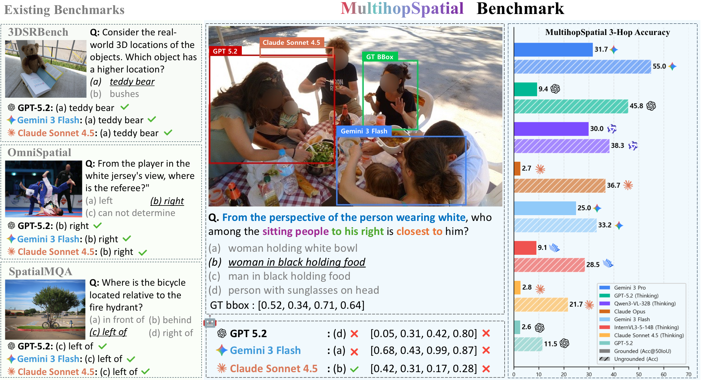
Figure: (Left) Existing benchmarks rely on single-hop standard MCQs without spatial localization. MultihopSpatial requires multi-hop compositional reasoning with grounded evaluation. (Right) Frontier VLMs show high MCQ accuracy (solid bars) but plummet under Acc@50IoU (striped bars), revealing a severe spatial grounding blind spot.
Real-world instructions require chaining multiple spatial inferences. MultihopSpatial introduces 1- to 3-hop queries composing attribute, position, and relation — going far beyond the single-step "left/right" questions of existing benchmarks.
Instructions to embodied agents (e.g., humanoid robots, VLAs) are inherently complex. An agent must adopt a perspective, filter candidates, and compare relations before it can act — exactly the multi-hop reasoning our benchmark evaluates.
Embodied agents need not only correct answers but also precise visual grounding. We propose Acc@50IoU, which requires both a correct MCQ answer and an accurate bounding box, exposing models that guess without truly locating the target.
MultihopSpatial-Train (6,791 samples) enables RL post-training that enhances intrinsic spatial reasoning across 5 benchmarks and translates to improved downstream manipulation performance in VLA tasks.
Why multi-hop spatial reasoning matters for embodied AI
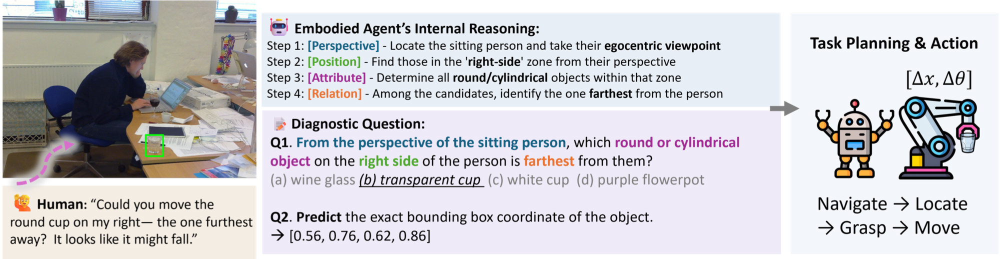
Figure: A multi-hop spatial reasoning example for an embodied agent in a real-world scenario.
The development of embodied agents — particularly Vision-Language-Action (VLA) models — fundamentally relies on VLMs for spatial reasoning to interact with the physical world. In complex real-world environments, an instruction like "Could you move the round cup on my right — the one furthest away?" requires an agent to adopt an ego-centric perspective, isolate the target position, filter by attributes, and compare spatial relations.
This internal reasoning mirrors a diagnostic multi-hop multiple-choice question coupled with precise bounding box prediction. An agent can only successfully navigate and manipulate an object if it accurately answers the query and visually grounds the target. However, existing spatial reasoning benchmarks focus almost exclusively on single-hop queries (e.g., "Is X to the right of Y?"), failing to capture the compositional, multi-step reasoning essential for real-world embodied scenarios.
A comprehensive benchmark for multi-hop compositional spatial reasoning with visual grounding
MultihopSpatial is a 4,500-sample benchmark of manually annotated VQA pairs focusing on multi-hop, compositional spatial queries common in real-world scenarios. Each example provides ground-truth bounding boxes to jointly evaluate reasoning and spatial localization, which is crucial for embodied/VLA settings (e.g., grasping and action). This grounded design improves interpretability and eliminates the evaluation blind spot of random guessing.
We curate 3,563 spatially complex images from COCO and PACO-Ego4D, ensuring diverse coverage of everyday indoor/outdoor scenes and ego/exo perspectives. Upon these images, we construct 4,500 MCQs, perfectly balanced across 1- to 3-hop reasoning levels (1,500 per hop) and viewpoints (750 ego-centric and 750 exo-centric per hop).
To eliminate the reliability concerns and hallucinations inherent in AI-generated data, all QA pairs and bounding boxes were strictly annotated by ten trained human experts. Each sample underwent a rigorous multi-stage verification with three rounds of independent cross-checking, achieving high inter-annotator agreement (Krippendorff's α = 0.90). Furthermore, we introduce MultihopSpatial-Train, an auxiliary large-scale corpus of 6,791 grounded VQA samples designed to support post-training of VLMs for spatial intelligence.
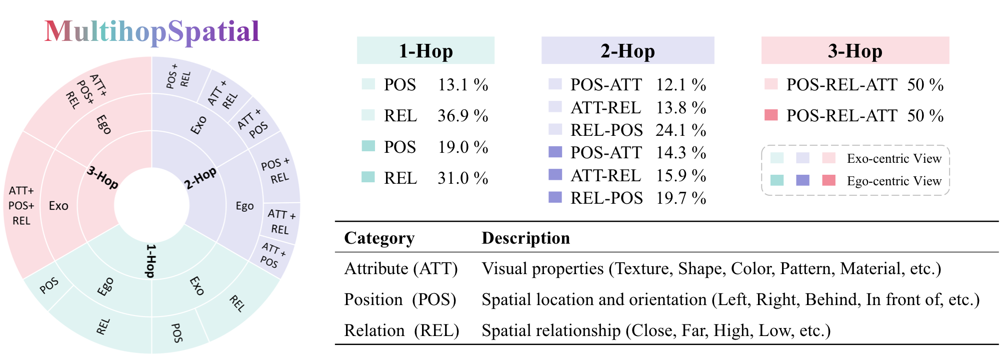
Figure: Compositional structure and category definitions in MultihopSpatial.
We define three fundamental spatial reasoning categories: Attribute (att), Position (pos), and Relation (rel). Our benchmark systematically composes these categories into multi-hop questions (e.g., 2- and 3-hop) that demand sequential intermediate inferences — identifying candidates, comparing relations, and resolving ambiguities. By increasing the hop count, we represent longer reasoning chains and escalating difficulty, enabling fine-grained diagnosis of model performance across different levels of reasoning complexity.
1-Hop: Single-step questions targeting one spatial category (pos or rel). We exclude att as a standalone category since attributes are primarily perceptual unless composed with spatial metrics. While 1-hop spatial reasoning has been explored in prior works, we deliberately include it as a controlled baseline for depth-wise comparisons against multi-hop compositions.
2-Hop: Questions combining two categories (att+pos, att+rel, or pos+rel). These queries follow a two-stage structure: (i) restricting the candidate set using one category, and (ii) identifying the target by applying the other. Both constraints must be jointly satisfied, regardless of the specific inference order.
3-Hop: Questions incorporating all three categories (att+pos+rel) in a single query. An att cue narrows candidates, after which the model reasons over pos and rel to identify the target (e.g., selecting the rightmost object that is farthest/closest). This structure mirrors how humans refer to objects in cluttered scenes, testing the disambiguation needed for embodied task execution.
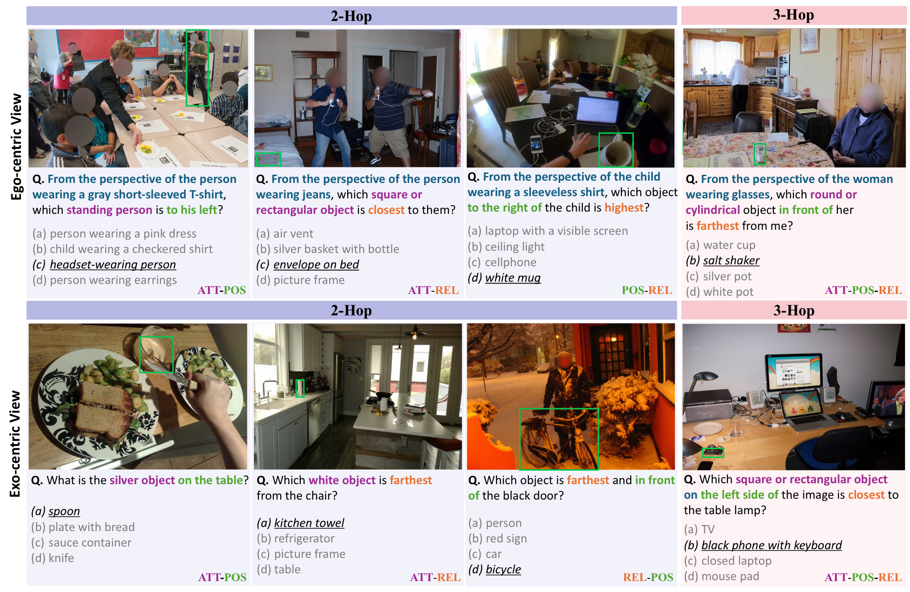
Figure: Example MultihopSpatial questions for 2-hop and 3-hop reasoning under ego-centric (top) and exo-centric (bottom) views.
Evaluating 37 VLMs across 5 categories on MultihopSpatial
Percentage of correct multiple-choice predictions. Standard but does not verify spatial localization.
Our primary grounded metric. Correct only if the answer matches and predicted bounding box has IoU ≥ 0.5 with ground truth.
Computed over MCQ-correct samples only, isolating grounding capability from reasoning errors.
Overall Performance: Gemini-3-Pro achieves the highest MCQ accuracy (64.7%) and Acc@50IoU (40.6%), while Qwen3-VL-32B-Thinking leads the open-weight category. Top performance in answer selection does not guarantee precise localization.
Metric-dependent Rankings: Claude-Opus-4.5 drops from 7th (MCQ) to 29th (Acc@50IoU), while the smaller Qwen3-VL-4B rises from 25th to 10th due to robust grounding — proving MCQ alone is misleading.
Benchmark Difficulty: The best model peaks at just 40.6% Acc@50IoU. Under 3-hop ego-centric conditions, only 3 of 37 models exceed the 25% random MCQ baseline. GPT-5.2-Thinking achieves just 8.5% and Claude-Sonnet-4.5-Thinking just 1.9%.
| Model | Overall | 3Hop-Ego | 3Hop-Exo | 2Hop-Ego | 2Hop-Exo | 1Hop-Ego | 1Hop-Exo | ||||||||
|---|---|---|---|---|---|---|---|---|---|---|---|---|---|---|---|
| Acc. | Acc@50 | IoU | Acc. | Acc@50 | Acc. | Acc@50 | Acc. | Acc@50 | Acc. | Acc@50 | Acc. | Acc@50 | Acc. | Acc@50 | |
| Proprietary Models — Instant | |||||||||||||||
| Claude-Opus-4.5 | 45.1 | 3.2 | 13.3 | 25.7 | 2.0 | 48.5 | 3.6 | 33.7 | 2.0 | 58.1 | 4.8 | 43.2 | 3.5 | 61.1 | 3.1 |
| Claude-Sonnet-4.5 | 20.9 | 0.5 | 4.2 | 6.4 | 0.4 | 18.5 | 0.9 | 12.3 | 0.0 | 34.7 | 1.6 | 13.5 | 0.0 | 40.0 | 0.1 |
| GPT-5.2 | 19.3 | 2.0 | 11.8 | 5.3 | 0.7 | 18.0 | 4.9 | 10.8 | 0.1 | 30.4 | 5.9 | 8.1 | 0.0 | 43.3 | 0.4 |
| Open-weight Models — Instant | |||||||||||||||
| GLM-4.6V | 43.2 | 35.2 | 69.5 | 15.9 | 12.3 | 46.7 | 39.3 | 22.7 | 18.4 | 61.6 | 53.2 | 32.4 | 24.3 | 80.1 | 63.7 |
| Molmo2-8B | 41.8 | 0.3 | 8.8 | 15.9 | 0.3 | 44.4 | 0.4 | 21.6 | 0.3 | 60.4 | 0.1 | 32.4 | 0.4 | 76.4 | 0.3 |
| Qwen3-VL-235B | 41.3 | 34.8 | 71.1 | 14.8 | 12.3 | 42.9 | 37.6 | 21.9 | 18.5 | 58.5 | 52.7 | 30.7 | 23.5 | 79.2 | 64.4 |
| Qwen3-VL-32B | 40.9 | 33.4 | 69.6 | 13.9 | 9.7 | 43.9 | 36.4 | 21.9 | 17.2 | 59.2 | 53.1 | 30.4 | 22.3 | 76.4 | 61.6 |
| InternVL-3.5-38B | 40.8 | 9.7 | 28.7 | 17.5 | 3.2 | 44.5 | 12.3 | 24.3 | 4.5 | 56.8 | 24.5 | 31.9 | 3.3 | 69.6 | 10.4 |
| InternVL-3.5-14B | 39.7 | 7.9 | 26.2 | 17.1 | 2.5 | 44.5 | 10.1 | 22.0 | 2.8 | 56.1 | 14.4 | 30.4 | 3.3 | 68.0 | 14.0 |
| InternVL-3.5-4B | 39.7 | 10.3 | 30.0 | 15.9 | 3.1 | 45.2 | 13.5 | 23.9 | 4.5 | 54.9 | 18.7 | 31.9 | 3.6 | 66.3 | 18.4 |
| InternVL-3.5-8B | 38.3 | 9.4 | 30.0 | 14.7 | 2.9 | 41.1 | 10.7 | 23.3 | 4.0 | 50.1 | 17.2 | 30.5 | 4.5 | 70.0 | 17.3 |
| Qwen3-VL-8B | 38.0 | 31.3 | 69.5 | 12.3 | 8.8 | 42.1 | 36.1 | 18.8 | 15.2 | 55.3 | 49.1 | 26.7 | 20.8 | 72.8 | 58.0 |
| Qwen3-VL-4B | 37.8 | 31.0 | 69.9 | 15.5 | 10.9 | 40.1 | 33.7 | 20.9 | 16.0 | 53.5 | 46.9 | 26.7 | 21.2 | 70.3 | 57.2 |
| Gemma-3-IT-27B | 33.1 | 0.4 | 5.4 | 18.1 | 0.1 | 30.8 | 0.5 | 22.0 | 0.1 | 45.7 | 1.1 | 28.1 | 0.3 | 53.9 | 0.3 |
| Gemma-3-IT-12B | 29.8 | 0.4 | 5.9 | 16.9 | 0.3 | 31.6 | 0.5 | 22.1 | 0.4 | 40.8 | 0.5 | 22.9 | 0.1 | 44.5 | 0.5 |
| Gemma-3-IT-4B | 28.4 | 0.2 | 3.0 | 22.1 | 0.0 | 27.2 | 0.3 | 22.5 | 0.1 | 36.8 | 0.3 | 27.1 | 0.3 | 34.7 | 0.1 |
| Proprietary Models — Reasoning | |||||||||||||||
| Gemini-3-Pro* | 64.7 | 40.6 | 55.0 | 39.7 | 18.8 | 71.1 | 45.3 | 36.8 | 20.5 | 81.2 | 55.5 | 71.1 | 41.1 | 88.4 | 62.3 |
| GPT-5.2-Thinking | 57.9 | 11.5 | 29.0 | 36.1 | 8.5 | 55.7 | 10.4 | 49.7 | 7.6 | 63.6 | 18.0 | 65.6 | 12.5 | 76.4 | 11.7 |
| Gemini-3-Flash* | 57.2 | 40.2 | 61.2 | 6.9 | 4.3 | 61.2 | 46.9 | 42.3 | 25.3 | 80.0 | 63.7 | 66.0 | 38.9 | 86.8 | 62.1 |
| Claude-Opus-4.5-Thinking | 47.0 | 4.7 | 16.7 | 25.5 | 3.5 | 49.7 | 4.7 | 35.2 | 3.1 | 60.0 | 8.8 | 45.1 | 5.2 | 66.5 | 2.9 |
| Claude-Sonnet-4.5-Thinking | 32.2 | 4.3 | 19.2 | 14.7 | 1.9 | 29.9 | 3.6 | 22.1 | 2.3 | 45.7 | 8.1 | 31.3 | 3.9 | 49.3 | 6.1 |
| Open-weight Models — Reasoning | |||||||||||||||
| Qwen3-VL-32B-Thinking | 46.8 | 37.4 | 67.2 | 19.2 | 12.9 | 57.5 | 47.1 | 24.3 | 18.1 | 70.1 | 60.0 | 30.4 | 23.1 | 79.6 | 63.2 |
| Qwen3-VL-235B-Thinking | 45.1 | 36.3 | 67.8 | 17.6 | 12.7 | 51.2 | 42.3 | 24.8 | 19.3 | 67.6 | 58.7 | 31.2 | 22.8 | 78.1 | 61.9 |
| Qwen3-VL-4B-Thinking | 42.6 | 28.7 | 58.3 | 20.4 | 9.2 | 48.1 | 34.8 | 22.3 | 12.0 | 63.9 | 50.7 | 30.8 | 16.3 | 70.4 | 49.2 |
| InternVL-3.5-38B-Thinking | 42.1 | 27.4 | 57.0 | 19.5 | 10.9 | 43.3 | 32.5 | 24.7 | 15.3 | 56.8 | 39.2 | 34.8 | 20.7 | 73.6 | 45.9 |
| GLM-4.6V-Thinking | 42.0 | 34.7 | 70.1 | 14.1 | 10.7 | 46.3 | 40.0 | 19.5 | 15.3 | 63.1 | 56.1 | 31.2 | 23.3 | 77.6 | 62.7 |
| Qwen3-VL-8B-Thinking | 41.7 | 29.5 | 60.1 | 18.5 | 9.2 | 47.9 | 36.4 | 21.3 | 11.9 | 63.3 | 51.6 | 28.5 | 16.5 | 70.5 | 51.2 |
| InternVL-3.5-8B-Thinking | 40.6 | 5.2 | 22.1 | 20.5 | 1.3 | 39.9 | 6.7 | 24.1 | 1.9 | 57.3 | 10.4 | 30.9 | 3.5 | 70.5 | 7.6 |
| InternVL-3.5-4B-Thinking | 40.6 | 4.7 | 21.4 | 18.3 | 1.2 | 41.2 | 4.8 | 24.4 | 1.7 | 58.5 | 9.6 | 32.8 | 1.5 | 68.1 | 9.3 |
| InternVL-3.5-14B-Thinking | 38.2 | 11.1 | 34.7 | 14.1 | 4.7 | 42.8 | 13.6 | 21.1 | 5.6 | 55.3 | 20.5 | 27.6 | 6.4 | 68.0 | 15.9 |
| Specialized Spatial Reasoning Models | |||||||||||||||
| SenseNova-InternVL3-8B | 42.3 | 17.3 | 38.8 | 20.4 | 9.1 | 45.2 | 19.7 | 25.2 | 9.2 | 55.5 | 27.2 | 34.5 | 11.2 | 73.2 | 27.2 |
| Cosmos-Reason2-8B | 37.8 | 27.9 | 61.4 | 15.2 | 10.5 | 40.7 | 31.9 | 19.5 | 13.5 | 54.5 | 43.5 | 26.5 | 17.1 | 70.1 | 51.1 |
| VST-7B-RL | 36.0 | 0.0 | 1.5 | 16.7 | 0.0 | 34.1 | 0.1 | 23.9 | 0.0 | 48.1 | 0.0 | 24.5 | 0.0 | 68.8 | 0.0 |
| SpaceQwen3-VL-2B | 33.6 | 10.1 | 31.5 | 18.5 | 4.0 | 32.5 | 9.9 | 22.8 | 4.0 | 47.2 | 22.9 | 26.1 | 4.4 | 54.3 | 15.2 |
| SpaceOm | 32.3 | 0.3 | 2.6 | 15.3 | 0.5 | 37.9 | 0.1 | 19.6 | 0.1 | 47.9 | 0.4 | 20.5 | 0.3 | 52.8 | 0.4 |
| SpatialReasoner | 31.7 | 8.7 | 29.9 | 18.0 | 6.8 | 34.0 | 10.3 | 19.6 | 4.3 | 46.0 | 13.7 | 21.3 | 5.7 | 51.5 | 11.2 |
| SpaceThinker-3B | 31.1 | 4.0 | 16.6 | 15.9 | 2.9 | 36.3 | 3.7 | 19.2 | 2.9 | 44.5 | 6.5 | 20.8 | 3.3 | 50.0 | 4.3 |
Table 1: Benchmark results across different hop counts and Ego/Exo perspectives. Green cells indicate the best performance within each model group. *Gemini-3-Pro & -Flash operate with thinking mode enabled by default and do not provide an option to fully disable it. We therefore classify them as reasoning models.
Eight key insights from evaluating 37 VLMs on MultihopSpatial
Evaluating the impact of reasoning complexity across all 37 models reveals a consistent performance degradation as the number of hops increases, confirming that compositional spatial reasoning remains a fundamental challenge for current VLMs. Both MCQ accuracy and Acc@50IoU exhibit steep declines from 1-hop to 3-hop.
Crucially, this degradation is exacerbated under ego-centric evaluation, which requires additional perspective transformation. The widening performance gap between ego-centric and exo-centric views at higher hops suggests that perspective-taking compounds with multi-step reasoning, creating a multiplicative rather than additive difficulty.
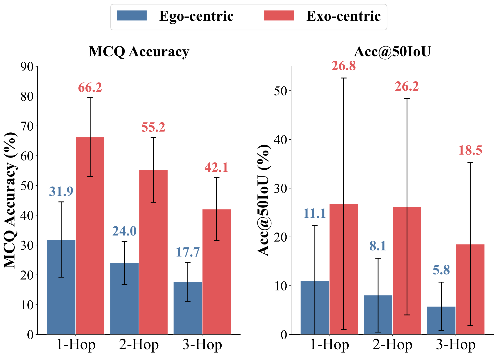
Average performance by hop count. Performance degrades consistently as reasoning hops increase.
Beyond a simple performance drop, ego-centric evaluation fundamentally alters capability visibility. Under exo-centric conditions, our Acc@50IoU metric clearly distinguishes grounding-capable models (e.g., Qwen3-VL) from those lacking native localization (e.g., InternVL-3.5) despite their similar MCQ accuracies.
Conversely, ego-centric evaluation acts as an evaluation blind spot: it suppresses even strong grounding models to a 20–25% floor, completely masking these capability gaps. This compression highlights the necessity of evaluating perspectives jointly and reinforces Acc@50IoU as an essential metric to expose disparities invisible to conventional MCQ evaluation.
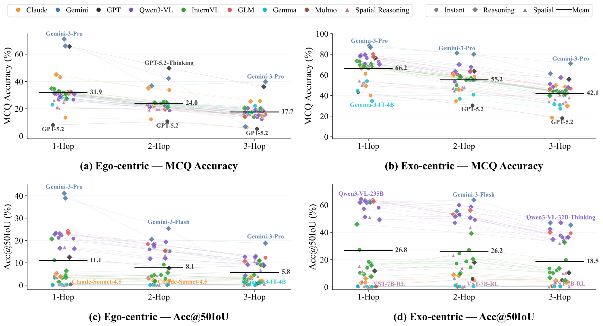
Model performance scatter plots. Ego-centric evaluation masks grounding differences visible in exo-centric conditions.
While reasoning models consistently outperform instant models, this advantage diminishes under multi-hop pressure. The initial MCQ gain of up to +8 pp at 1-hop narrows considerably by 3-hop.
Critically, even with extended thinking, reasoning models plummet to sub-20% MCQ accuracy and sub-10% Acc@50IoU on 3-hop ego-centric tasks. This convergence toward the performance floor reveals that inference-time reasoning (e.g., chain-of-thought) yields diminishing returns as compositional steps accumulate. MultihopSpatial thus exposes a capability ceiling that test-time compute alone cannot resolve.
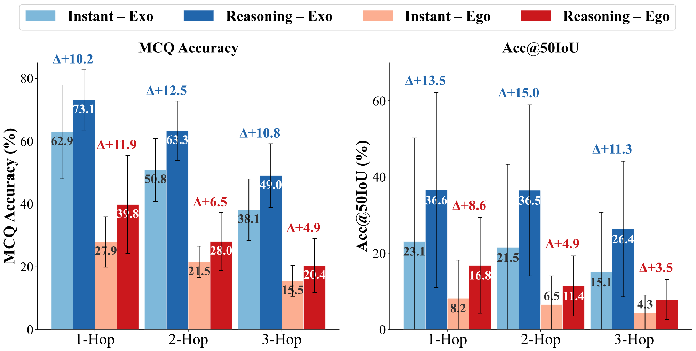
Reasoning vs. Instant models. The reasoning advantage shrinks with increasing hop count.
While proprietary models hold a slight MCQ advantage in ego-centric tasks—indicating stronger perspective-taking—open-weight models consistently dominate in Acc@50IoU. This reversal stems from a distinct asymmetry in visual grounding capabilities.
Proprietary models exhibit high variance: while the Gemini-3 series demonstrates robust localization, others (e.g., GPT-5.2, Claude) lack native grounding, significantly dragging down the group average. Conversely, open-weight families (e.g., Qwen3-VL, GLM-4.6V) maintain consistently high grounding performance, forming a dense cluster at 60%+ in exo-centric Acc@50IoU.
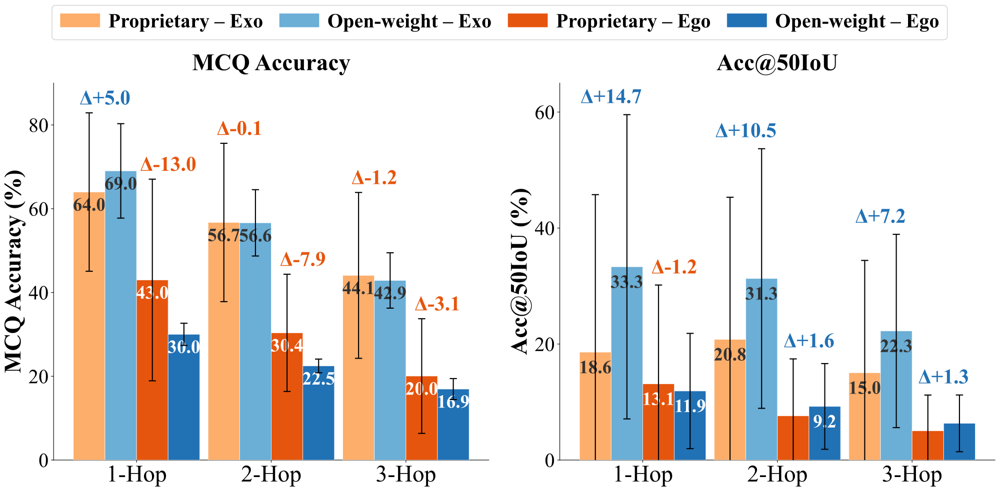
Open-weight vs. Proprietary models across hop count and viewpoint.
Comparing specialized spatial reasoning models (SRMs) against comparable general-purpose VLMs (≤10B) reveals a counterintuitive trend: SRMs consistently underperform across all metrics and hop counts.
This shortfall primarily stems from the robust native grounding inherent in general models (e.g., Qwen3-VL), which most SRMs lack. These findings indicate that current SRMs, typically fine-tuned on single-step QA, fail to generalize to multi-hop scenarios, suggesting that general-purpose VLMs provide a stronger foundation for compositional spatial understanding.
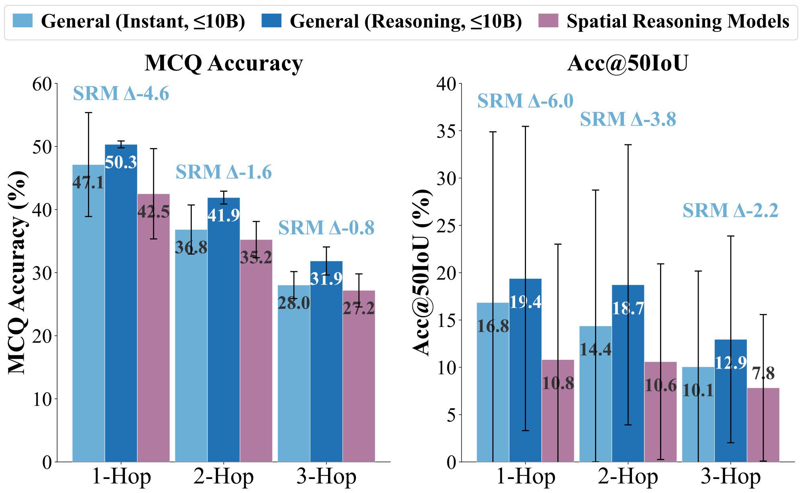
Spatial Reasoning Models vs. General Models (≤10B).
A striking disconnect exists between answer selection and spatial localization: most models fall far below the y=x line, indicating that high MCQ accuracy does not entail accurate grounding. Across all 37 models, the average ungrounded ratio reaches 59%, meaning more than half of correctly answered questions lack proper spatial localization.
This ratio varies dramatically by category: proprietary instant models exhibit 93% ungrounded accuracy, while open-weight reasoning models achieve the lowest at 43%. At the extreme, models such as Gemma-3-IT, Molmo2, and Claude-Sonnet-4.5 exceed 98% ungrounded, effectively answering through shortcuts without any spatial understanding.
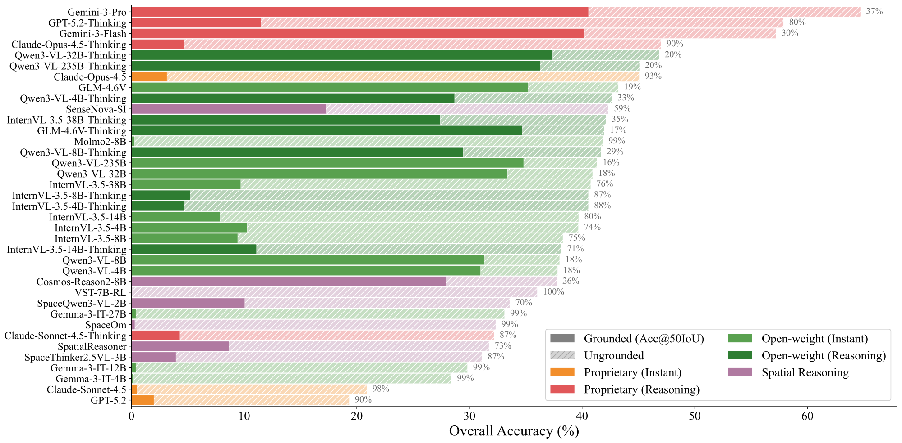
Grounded (Acc@50IoU) vs. Ungrounded accuracy per model. Hatched regions indicate ungrounded responses.
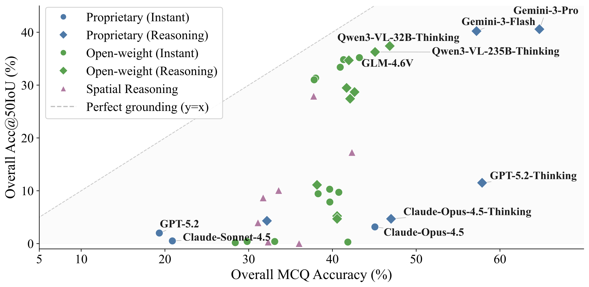
Grounding Gap: MCQ Acc. vs. Acc@50IoU.
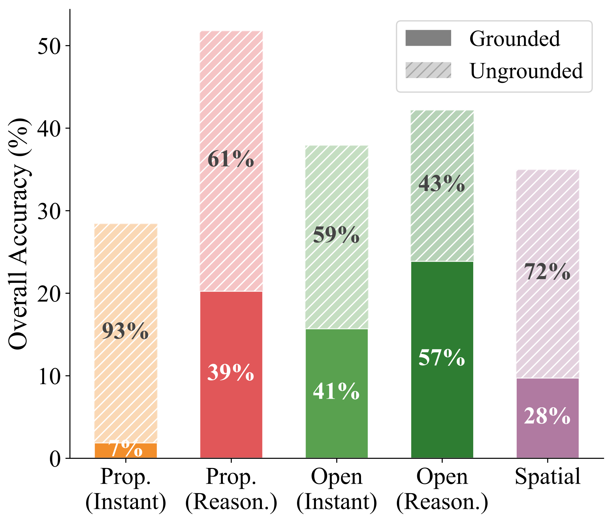
Ungrounded Ratio by Model Category.
Analyzing model scale across three open-weight families reveals that scaling the language backbone alone yields limited gains. While MCQ accuracy shows modest, saturating improvements, Acc@50IoU largely plateaus (e.g., Qwen3-VL) or remains near zero (e.g., Gemma-3-IT).
A notable exception is InternVL-3.5 at 38B, which exhibits a sharp grounding jump from 5.2% to 27.4%. Crucially, this leap coincides with a significant upgrade in its vision encoder (from 300M to 6B), whereas models utilizing fixed, small vision encoders (e.g., Qwen3-VL’s 400M) saturate early. This demonstrates that multi-hop spatial reasoning depends critically on scaling the capacity of visual spatial representations, not solely the language component.
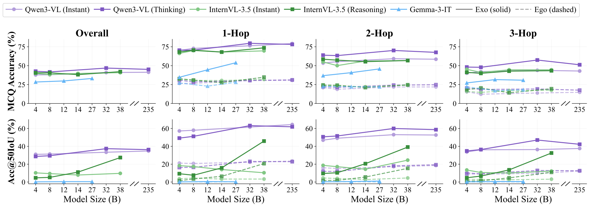
Effect of model scale on MCQ Accuracy (top) and Acc@50IoU (bottom) across overall and per-hop settings.
Analyzing error rates across spatial tag combinations reveals that while reasoning models consistently outperform instant models, multi-tag compositions remain a critical bottleneck. Specifically, the Position-Relation (P-R) combination incurs significantly higher errors than single-tag settings, highlighting the severe difficulty of jointly handling positional localization and relational comparison.
Even specialized spatial reasoning models, which achieve the lowest overall errors, exhibit non-trivial failures on these complex compositions. This underscores that true compositional spatial reasoning remains an unresolved challenge across the current VLM ecosystem.
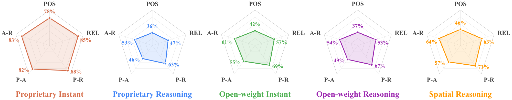
Average error rates (%) by tag combination across model categories. A, R, and P denote Attribute, Relation, and Position.
Reinforcement learning post-training enhances both spatial reasoning and downstream VLA performance
Beyond serving as a static evaluation benchmark, we investigate MultihopSpatial as a training corpus. We post-train Qwen3-VL-4B-Instruct via Group Relative Policy Optimization (GRPO) using a composite reward function that jointly evaluates format adherence, answer correctness, and spatial localization accuracy:
Format Reward: Binary reward (1 if output follows expected parsing format, 0 otherwise).
MCQ Reward: Discrete correctness signal (1 if predicted choice matches ground truth).
BBox Reward: Continuous GIoU-based localization score normalized to [0, 1], providing dense geometric feedback.
The GRPO-trained model achieves substantial improvements on both the in-domain MultihopSpatial benchmark and five out-of-domain spatial reasoning benchmarks, demonstrating that spatial reasoning capabilities generalize beyond the training distribution.
| Model | MultihopSpatial (In-domain) | Out-of-Domain | ||||||
|---|---|---|---|---|---|---|---|---|
| Acc. | Acc@50IoU | avg. IoU | BLINK | 3DSRBench | OmniSpatial | VSI-Bench | SpatialMQA | |
| Qwen3-VL-4B-Instruct | 37.8 | 31.0 | 69.9 | 82.5 | 56.1 | 42.7 | 62.8 | 39.6 |
| w/ MultihopSpatial | 62.9 | 53.8 | 72.6 | 85.3 | 56.3 | 43.9 | 63.2 | 41.1 |
Table 2: Impact of MultihopSpatial-Train on spatial reasoning across diverse benchmarks.
When deployed as a VLM backbone using VLM4VLA, the MultihopSpatial-trained model consistently outperforms the baseline. On CALVIN, the average task completion score rises from 3.75 to 3.98, with the performance gap widening as the task chain lengthens (from +0.6% on Task-1 to +7.0% on Task-5). The model also achieves a +4.2% improvement on Libero (35.8% → 40.0%).
| VLM backbone | Task-1 | Task-2 | Task-3 | Task-4 | Task-5 | Calvin | Libero |
|---|---|---|---|---|---|---|---|
| Qwen3-VL-4B-Instruct | 92.4 | 81.8 | 74.1 | 66.8 | 59.9 | 3.75 | 35.8 |
| w/ MultihopSpatial-Train | 93.0 | 85.4 | 79.3 | 73.2 | 66.9 | 3.98 | 40.0 |
Table 3: Vision-Language-Action evaluation on Calvin ABC-D and Libero. Each task measures success rate (%). Calvin denotes the average number of successfully completed tasks per sequence.
Illustrative failure cases revealing cascading errors in multi-hop spatial reasoning
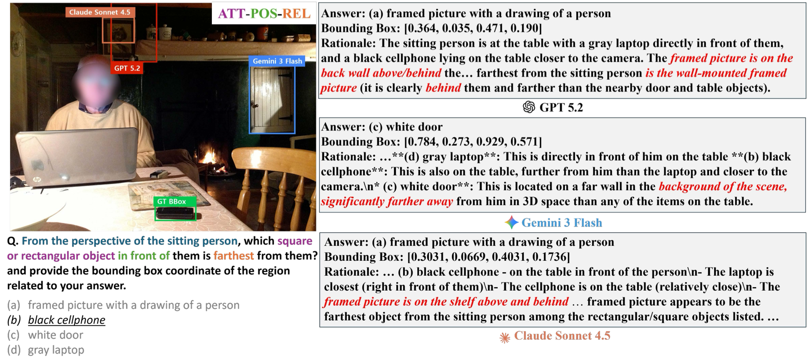
Figure: Qualitative failure analysis on a 3-hop ego-centric question. All three models recognized the position condition "in front of," but failed to incorporate it into their final predictions.
The query asks to identify the farthest square or rectangular object in front of the sitting person. However, all three models neglect the position condition, instead selecting the farthest rectangular object based solely on attribute and relation. Examining each model's rationale reveals that they explicitly acknowledge the "in front of" constraint during reasoning, yet consistently disregard it in the final answer — demonstrating a failure to maintain intermediate conditions throughout the chain. An error at any single hop inevitably propagates to an incorrect final prediction.
Browse through representative failure cases across 2-hop and 3-hop ego-centric and exo-centric questions:
@article{lee2026multihopspatial,
title={MultihopSpatial: Multi-hop Compositional Spatial Reasoning Benchmark for Vision-Language Model},
author={Lee, Youngwan and Jang, Soojin and Cho, Yoorhim and Lee, Seunghwan and Lee, Yong-Ju and Hwang, Sung Ju},
journal={arXiv preprint arXiv:2603.18892},
year={2026},
url={https://arxiv.org/abs/2603.18892}
}